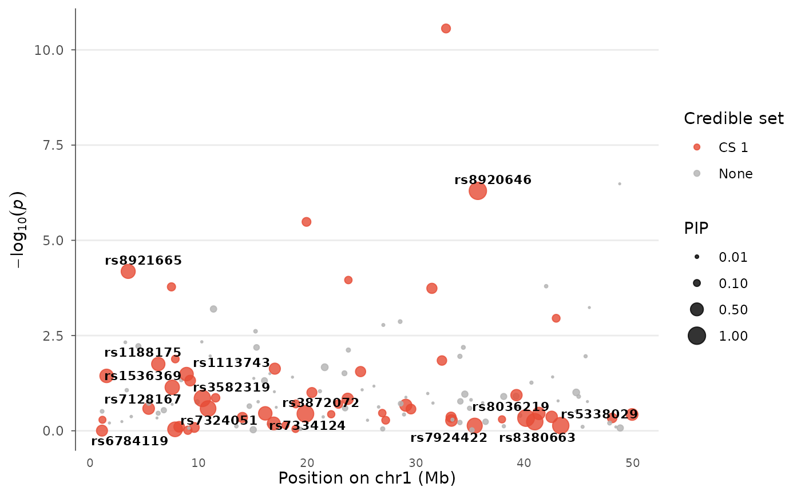

A locus plot where point size encodes posterior inclusion probability (PIP) from fine-mapping tools like SuSiE or FINEMAP. Credible set membership is shown by color. This is the emerging standard for visualizing fine-mapping results in GWAS publications.
Usage
finemapping_plot(
data,
pip = "PIP",
credible_set = "credible_set",
chr = NULL,
bp = NULL,
p = NULL,
snp = NULL,
region_chr = NULL,
region_start = NULL,
region_end = NULL,
lead_snp = NULL,
flank = 5e+05,
pip_min_size = 0.3,
pip_max_size = 5,
set_colors = c("#E64B35", "#4DBBD5", "#00A087", "#3C5488", "#F39B7F"),
nonsig_color = "grey70",
show_pip_legend = TRUE,
label_pip_above = 0.5,
title = NULL
)Arguments
- data
A data.frame with at minimum CHR, BP, P columns, plus a PIP column (posterior inclusion probability, 0-1).
- pip
Column name for posterior inclusion probability.
- credible_set
Column name for credible set assignment (integer). Variants in the same set get the same color.
- chr, bp, p, snp
Column name overrides.
- region_chr, region_start, region_end
Region to plot.
- lead_snp
Center on this SNP ± flank.
- flank
Flank size in bp.
- pip_min_size
Minimum point size (for PIP ≈ 0).
- pip_max_size
Maximum point size (for PIP ≈ 1).
- set_colors
Colors for credible sets.
- nonsig_color
Color for variants not in any credible set.
- show_pip_legend
Show the PIP size legend.
- label_pip_above
Label variants with PIP above this value.
- title
Plot title.
Examples
data(example_gwas)
# Add simulated fine-mapping results
example_gwas$PIP <- runif(nrow(example_gwas))^4
example_gwas$PIP[which.min(example_gwas$P)] <- 0.95
example_gwas$credible_set <- NA
example_gwas$credible_set[example_gwas$PIP > 0.1] <- 1L
finemapping_plot(example_gwas, region_chr = 1,
region_start = 1e6, region_end = 50e6)
